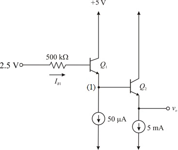
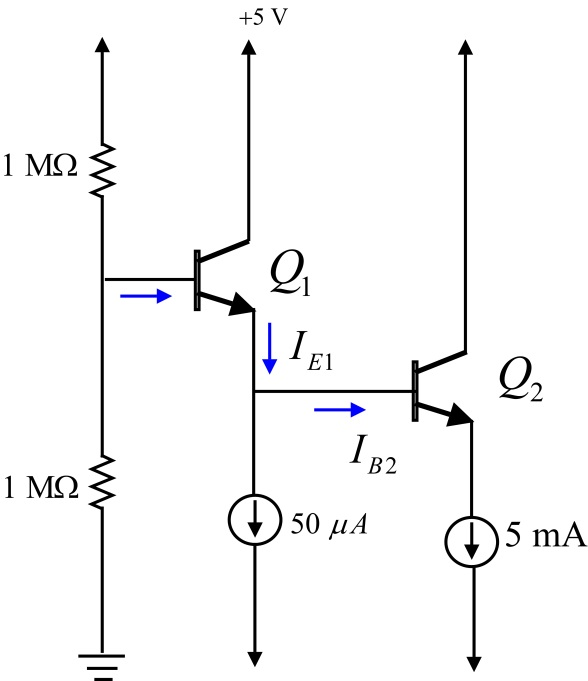
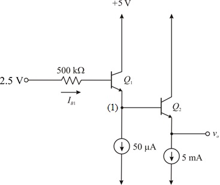

Calculate the voltage,  .
.
Calculate the equivalent resistance,  .
.
Draw the Thevenin’s equivalent at the base of transistor .
.

Figure 2
(a)
Refer to Figure P6.155 in the text book.
Draw the DC equivalent of the circuit as shown in Figure P6.155 in the text book.

Figure 1
Calculate the voltage, .
Calculate the equivalent resistance, .
Draw the Thevenin’s equivalent at the base of transistor.

Figure 2
Write the expression for .
.
Substitute for ,
, for
for and calculate
and calculate .
.
Apply Kirchhoff’s current law at node 1 in the circuit.
Substitute for .
.
Thus, the dc emitter current of the transistor is
is and the dc emitter currentof the transistor is.
and the dc emitter currentof the transistor is.
Write the expression for the base current.
Substitute 50 for  and calculate, .
and calculate, .
 .
.
Substitute  for
for , for and
, for and  for
for .
.

Thus, the base voltageof the transistor is.
is.
Since, , substitute 1.52 V for and calculate  .
.
Observe form Figure 1 that, .
The voltage at the base of the transistor is,
is,
 .
.
Thus, the dc voltageof the transistor is.
is.
(b)
The resistance is,
The expression for the voltage gain of the common collector circuit is,
Substitute  for
for  and for .
and for .
Calculate the voltage gain.
Hence, the voltage gain, from the base to emitter of is.
Write the expression for the input resistance looking into the base of  .
.
Substitute 100 for , for  and
and  for
for  .
.
Hence, the input resistance, looking into the base of is .
(c)
The resistance  is,
is,
The voltage gain is,
The input resistance  is,
is,
Substitute 50 for , for and for .
Thus, the input resistance  isand the gain from the base to emitter of
isand the gain from the base to emitter of  ,
,  is.
is.
Consider the source resistance, .
Apply voltage division principle at the input terminal of the circuit.
Thus, the transmission to the base of  , is.
, is.
(e)
The overall gain of the circuit,  is,
is,
Substitute 0.82 for , 0.997 for and 0.995 for .
Hence, the overall gain  is
is .
.